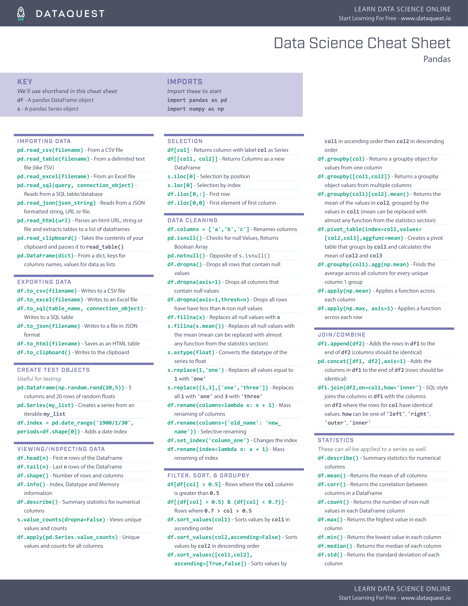

#在.py文件中输入，类似C语言的#include<…> import sys #引入1个库 import sys as ss #引入的同时取一个别名 import matplotlib.pyplot #引入子库 import os, sys, time #同时引入多个库 from os import path, walk, unlink #从……导入……功能 from os import * #导入库中所有内容
os.system("ffmpeg -i C:\\my_path\\animation.mp4 C:\\my_path\\animation.gif") # \\ allows to bypass any ascii issue because for example in python "\a" means "\x07" and "\\a" means "\a"
from collections import namedtuple #指向tuple的字典 from collections import deque #双端队列 from collections import defaultdict #不命中特殊返回的字典 from collections import OrderedDict #有序字典 from collections import ChainMap #二维字典 from collections import Counter #相当于multiset
#矩阵运算 a = np.array([[1.0, 2.0], [3.0, 4.0]]) #2X2矩阵 b = np.array([[5.0, 6.0], [7.0, 8.0]]) #同型矩阵 sum = a + b #加 a += 1#自加 difference = a - b #减 product = a * b #逐元素乘 a *= 2#自乘 quotient = a / b #逐元素除 matrix_product = a.dot(b) #矩阵乘法 #or matrix_product = np.dot(a, b)
#矩阵变形 v = np.transpose(np.array([[2,1,3]])) #矩阵转置 b = np.arange(12).reshape(4,3) #返回整形后的矩阵 c = np.arange(24).reshape(2,3,4) b.resize(2,6) #修改b数组本身 #广播（矩阵的自动匹配） a = np.array([1.0, 2.0, 3.0]) b = 2.0 a * b #广播，b被自动展成[2.0, 2.0, 2.0]
#通用函数 #NumPy提供了常见的数学函数，如sin，cos和exp。 np.exp(np.arange(3)) a = np.ones((3,4)) b = np.ones((3,4)) np.add(a, b) b = np.arange(12).reshape(3,4) b.sum(axis=0) #指定轴向的操作，这是在0号维度（竖着）上进行加法压缩 b.min(axis=1) # min of each row ，返回值仍然是一个行向量 b.cumsum(axis=1) # cumulative sum along each row data = 10*np.random.random((3,4)) a = np.around(data) #四舍五入 a = np.floor(data) #上取整 a = np.ceil(data) #下取整 a = np.where(data>0.5,data,0) #逻辑过滤
#解线性方程组 A = np.array([[2,1,-2],[3,0,1],[1,1,-1]]) b = np.transpose(np.array([[-3,5,-2]])) #x = np.linalg.solve(A,b) #线性回归。原理是正规方程，这个变换下不用显性求逆 X = np.random.random((3,4)) y = np.transpose(np.array([[3,2,5]])) Xt = np.transpose(X) XtX = np.dot(Xt,X) Xty = np.dot(Xt,y) beta = np.linalg.solve(XtX,Xty)
#索引、切片和迭代 a = np.arange(10)**3#**是指数符号，相当于^ a[2:5] #里面的数字就是索引。区间就是切片：array([ 8, 27, 64]) a[:6:2] = -1000#迭代赋值，2为步长，区间[0,6)。相当于a[0:6:2] # 注——对于:冒号语法，默认的区间都是前闭后开！[a,b) a[ : :-1] # reversed a for element in a.flat: print(element) #flat属性是数组中所有元素的迭代器
Here are just a few of the things that pandas does well:
Easy handling of missing data (represented as NaN) in floating point as well as non-floating point data
Size mutability: columns can be inserted and deleted from DataFrame and higher dimensional objects
Automatic and explicit data alignment: objects can be explicitly aligned to a set of labels, or the user can simply ignore the labels and let Series, DataFrame, etc. automatically align the data for you in computations
Powerful, flexible group by functionality to perform split-apply-combine operations on data sets, for both aggregating and transforming data
Make it easy to convert ragged, differently-indexed data in other Python and NumPy data structures into DataFrame objects
Time series-specific functionality: date range generation and frequency conversion, moving window statistics, moving window linear regressions, date shifting and lagging, etc.
总结：数据预处理，数据流/IO管理，鲁棒群操作，时间序列处理等。

读入 Importing Data
pd.read_csv(filename) | From a CSV file（读入训练数据） pd.read_table(filename) | From a delimited text file (like TSV) pd.read_excel(filename) | From an Excel file pd.read_sql(query, connection_object) | Read from a SQL table/database pd.read_json(json_string) | Read from a JSON formatted string, URL or file. pd.read_html(url) | Parses an html URL, string or file and extracts tables to a list of dataframes pd.read_clipboard() | Takes the contents of your clipboard and passes it to read_table() pd.DataFrame(dict) | From a dict, keys for columns names, values for data as lists
输出 Exporting Data
df.to_csv(filename,index=False) | Write to a CSV file（输出csv结果，index=False不额外保存行号） df.to_excel(filename) | Write to an Excel file df.to_sql(table_name, connection_object) | Write to a SQL table df.to_json(filename) | Write to a file in JSON format（保存模型）
创建测试对象 Create Test Objects
Useful for testing code segements
pd.DataFrame(np.random.rand(20,5)) | 5 columns and 20 rows of random floats pd.Series(my_list) | Create a series from an iterable my_list df.index = pd.date_range('1900/1/30', periods=df.shape[0]) | Add a date index
基础数据分析 Viewing/Inspecting Data
df.head(n) | First n rows of the DataFrame df.tail(n) | Last n rows of the DataFrame df.shape | Number of rows and columns df.info() | Index, Datatype and Memory information df.describe() | Summary statistics for numerical columns s.value_counts(dropna=False) | View unique values and counts df.apply(pd.Series.value_counts) | Unique values and counts for all columns
数据统计 Statistics
These can all be applied to a series as well.
df.describe() | Summary statistics for numerical columns df.mean() | Returns the mean of all columns df.corr() | Returns the correlation between columns in a DataFrame df.count() | Returns the number of non-null values in each DataFrame column df.max() | Returns the highest value in each column df.min() | Returns the lowest value in each column df.median() | Returns the median of each column df.std() | Returns the standard deviation of each column
df[col] | Returns column with label col as Series df[[col1, col2]] | Returns columns as a new DataFrame s.iloc[0] | Selection by position s.loc['index_one'] | Selection by index df.iloc[0,:] | First row df.iloc[0,0] | First element of first column
数据清洗 Data Cleaning
df.columns = ['a','b','c']| Rename columns pd.isnull() | Checks for null Values, Returns Boolean Arrray pd.notnull() | Opposite of pd.isnull() python进行数据处理——pandas的drop函数- 众荷喧哗- CSDN博客 df.drop('name',axis=1)| Drop a column with specified name（等效于df.drop(columns=['name'])） df.dropna() | Drop all rows that contain null values df.dropna(axis=1) | Drop all columns that contain null values df.dropna(axis=1,thresh=n) | Drop all rows have have less than n non null values df.fillna(x) | Replace all null values with x s.fillna(s.mean()) | Replace all null values with the mean (mean can be replaced with almost any function from the statistics section) s.astype(float) | Convert the datatype of the series to float s.replace(1,'one') | Replace all values equal to 1 with 'one' s.replace([1,3],['one','three']) | Replace all 1 with 'one' and 3 with 'three' df.rename(columns=lambda x: x + 1) | Mass renaming of columns df.rename(columns={'old_name': 'new_ name'}) | Selective renaming，传入字典，返回修改表头后的df（需要赋值） df.set_index('column_one') | Change the index df.rename(index=lambda x: x + 1) | Mass renaming of index
df[df[col] > 0.5] | Rows where the column col is greater than 0.5 df[(df[col] > 0.5) & (df[col] < 0.7)] | Rows where 0.7 > col > 0.5 df.sort_values(col1) | Sort values by col1 in ascending order df.sort_values(col2,ascending=False) | Sort values by col2 in descending order df.sort_values([col1,col2],ascending=[True,False]) | Sort values by col1 in ascending order then col2 in descending order df.groupby(col) | Returns a groupby object for values from one column df.groupby([col1,col2]) | Returns groupby object for values from multiple columns df.groupby(col1)[col2] | Returns the mean of the values in col2, grouped by the values in col1 (mean can be replaced with almost any function from the statistics section) df.pivot_table(index=col1,values=[col2,col3],aggfunc=mean) | Create a pivot table that groups by col1 and calculates the mean of col2 and col3 df.groupby(col1).agg(np.mean) | Find the average across all columns for every unique col1 group df.apply(np.mean) | Apply the function np.mean() across each column df.apply(np.max,axis=1) | Apply the function np.max() across each row
df1.append(df2) | Add the rows in df1 to the end of df2 (columns should be identical) pd.concat([df1, df2],axis=1) | Add the columns in df1 to the end of df2 (rows should be identical) df1.join(df2,on=col1,how='inner') | SQL-style join the columns in df1 with the columns on df2 where the rows for col have identical values. how can be one of 'left', 'right', 'outer', `’inner’
# Load the example dataset for Anscombe's quartet df = sns.load_dataset("anscombe")
# Show the results of a linear regression within each dataset sns.lmplot(x="x", y="y", col="dataset", hue="dataset", data=df, col_wrap=2, ci=None, palette="muted", height=4, scatter_kws={"s": 50, "alpha": 1})
二维回归 hue='something’
1 2 3 4 5 6 7 8 9 10 11
sns.set()
# Load the iris dataset iris = sns.load_dataset("iris")
# Plot sepal with as a function of sepal_length across days g = sns.lmplot(x="sepal_length", y="sepal_width", hue="species", truncate=True, height=5, data=iris)
# Use more informative axis labels than are provided by default g.set_axis_labels("Sepal length (mm)", "Sepal width (mm)")
# Load the brain networks example dataset df = sns.load_dataset("brain_networks", header=[0, 1, 2], index_col=0)
# Select a subset of the networks used_networks = [1, 5, 6, 7, 8, 12, 13, 17] used_columns = (df.columns.get_level_values("network") .astype(int) .isin(used_networks)) df = df.loc[:, used_columns]
# Create a categorical palette to identify the networks network_pal = sns.husl_palette(8, s=.45) network_lut = dict(zip(map(str, used_networks), network_pal))
# Convert the palette to vectors that will be drawn on the side of the matrix networks = df.columns.get_level_values("network") network_colors = pd.Series(networks, index=df.columns).map(network_lut)
# Draw the full plot sns.clustermap(df.corr(), center=0, cmap="vlag", row_colors=network_colors, col_colors=network_colors, linewidths=.75, figsize=(13, 13))
# Load an example dataset with long-form data fmri = sns.load_dataset("fmri")
# Plot the responses for different events and regions sns.lineplot(x="timepoint", y="signal", hue="region", style="event", data=fmri)
螺旋图 FacetGrid()
1 2 3 4 5 6 7 8 9 10 11 12 13 14 15 16
sns.set()
# Generate an example radial datast r = np.linspace(0, 10, num=100) df = pd.DataFrame({'r': r, 'slow': r, 'medium': 2 * r, 'fast': 4 * r})
# Convert the dataframe to long-form or "tidy" format df = pd.melt(df, id_vars=['r'], var_name='speed', value_name='theta')
# Set up a grid of axes with a polar projection g = sns.FacetGrid(df, col="speed", hue="speed", subplot_kws=dict(projection='polar'), height=4.5, sharex=False, sharey=False, despine=False)
# Draw a scatterplot onto each axes in the grid g.map(sns.scatterplot, "theta", "r")